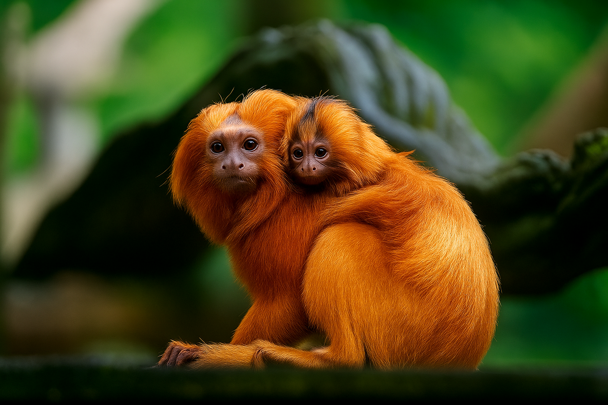

![Login]()
.png)


O Instituto Fauna Brasil atua na preservação de espécies ameaçadas e na recuperação de seus habitats. Com sua contribuição, podemos continuar salvando vidas, resgatando animais e educando pessoas sobre a importância de conservar nossa fauna.

Sua ajuda mantém viva a esperança de um futuro com mais vida selvagem.